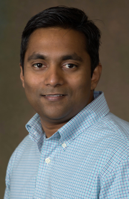

Ph.D. Candidate - Business Administration (Expected 2019)
Advisors: Prof. Subodha Kumar and Prof. Chelliah Sriskandarajah
Proposal Defense Completion Date: September 21, 2017
Department of Information and Operations Management
Mays Business School, Texas A&M University
Email: rmallipeddi@mays.tamu.edu
I am a fourth year PhD Student and Research Assistant in the Department of Information and Operations Management, Mays Business School at Texas A&M University. My research interests lie in social media analytics, supply chain analytics, and open innovation. Currently, my research focuses on studying operational problems in the digital economy and the impact of social media on supply chain performance of firms.
Ph.D. Mays Business School, Texas A&M University, College Station, Texas | Expected: 2019
Major: Business Administration | Department: Information and Operations Management
M.S. Oakland University, Rochester, Michigan | 2007 - 2008
Major: Industrial and Systems Engineering
B.S. The Ohio State University, Columbus, Ohio | 2002 - 2005
Major: Mechanical Engineering
o Dean's Award for Outstanding Research by PhD Student, Texas A&M University, 2017
o Information and Operations Management Department Fellowship, Texas A&M University, 2014 - 2019
o Mays PhD Enhancement Fellowship, Texas A&M University, 2014-2019
o Research Travel Fellowship, Texas A&M University, 2014-2019
o Travel Grant, Center for International Business Education and Research, Texas A&M University, 2015
Director/Operations Head | 2009-2014
Maks Group - Headquartered in Hyderabad, India with diversified business interests in Iron Foundry, Industrial Valve Design and Manufacturing, Engineering Services, and Construction.
Lean Manufacturing Consultant | 2008
TechCast Inc. - Steel Foundry located in Myerstown, PA, USA
Manufacturing Engineer | 2007 - 2008
Recycled Polymeric Materials LLC. - Detroit based manufacturer of polymer seals for automotives
Robotics Process Engineer | 2007 - 2008
Synergetic Engineering LLC. - A leading supplier of plant design and industrial automation solutions for auto industry, located in Detroit, MI